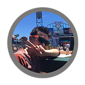

Cameron’s Transfer Blog is about… Cameron. That’s me, the writer! Really, this blog is about transferring, specifically from a California Community College to a 4-year university and my experience with the transfer process. I discuss the most important things to help students transfer to a 4-year college. I also hope to show high school students that community college may be a very good path to a 4-year institution.
I talk about community college life. I go through my successes and failures, and what I learned from my failures. I also share what I think are the most important things about community college. As a student at a 4-year university now, I also discuss the major differences between high school and college, both community college and 4-year colleges.
What inspired me to create this blog was about the lack of information I had about community college. When I was in high school, I never really heard about community college. I never knew the statistics about transferring, how hard the classes were, I had almost no information. When I was in community college, I didn’t know how successful transfer students were after they transferred. I didn’t really know the process all that well. I hope this blog can help clear those points up and help students succeed in their community college endeavors.
I talk about community college life. I go through my successes and failures, and what I learned from my failures. I also share what I think are the most important things about community college. As a student at a 4-year university now, I also discuss the major differences between high school and college, both community college and 4-year colleges.
What inspired me to create this blog was about the lack of information I had about community college. When I was in high school, I never really heard about community college. I never knew the statistics about transferring, how hard the classes were, I had almost no information. When I was in community college, I didn’t know how successful transfer students were after they transferred. I didn’t really know the process all that well. I hope this blog can help clear those points up and help students succeed in their community college endeavors.

As I said before, I’m Cameron. I’m a 3rd year Applied Mathematics student at (what I consider the greatest university evaaaarrr) UC Berkeley. I’m also considering double majoring in Data Science, but we’ll see how that goes. I chose math at first because I was really good at it. I liked numbers a lot, I could plug and chug into formulas like a mad man, and both my parents were mathy majors (my dad was Applied Math and my mom was Statistics/Economics). I also despise non-STEM classes, not because I think they’re bad or anything, but because I’m so much worse at them. I still can’t get over my teacher in 12th grade telling me that there isn’t any wrong interpretation, yet all my essays were marked with misinterpreted. STEM has always been what I’ve been good at as a student. I understand STEM concepts very well and I love how they all intertwine with each other. All STEM fields rely on each other to stay intact and that’s where I see the beauty in it.

I’m a very competitive person. I love sports a lot, like a lot. I love the Giants, Red Sox, 49ers, and Warriors (though I’ll admit, I’m a Warriors bandwagon). My two favorite sports to watch are baseball and football. I also played baseball in high school. I also like drawing, even though I’m not super good at it. I’m not very good at art in general. For instance, if you look closely at the bird in the header of this page, you can see the shadow is all wrong. The bird is darker on the top and lighter on the bottom, but the light source is in the sky, so that can’t be! I also only have the capability of drawing stick figures for people.
I’ve also been a Starbucks barista, STEM tutor, and Math Club President.